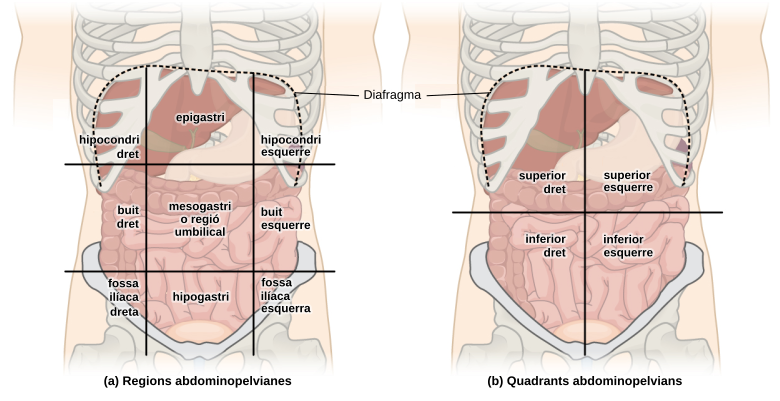
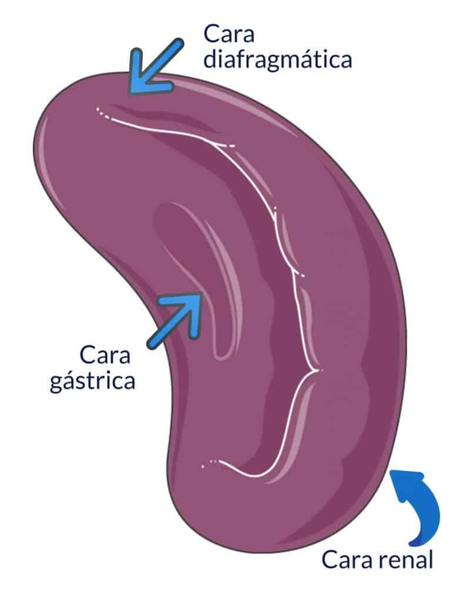
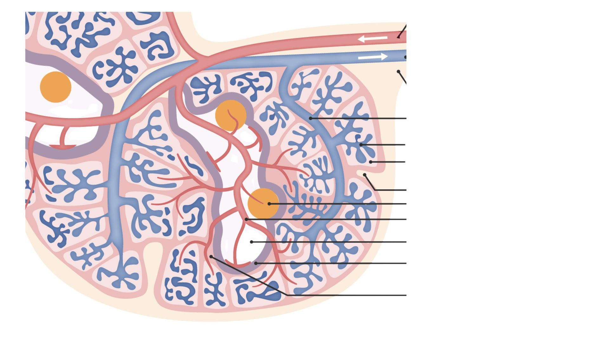

Anatomia Humana
Melsa
Sopa de lletres
2
Trobeu els mots ocults. Corresponen als òrgans que es relacionen anatòmicament amb la melsa.
%E9%B0%E6%EB%E2%F7%D5%F3%FF%F7%B0%A8%B0%C1%FD%E2%F3%B0%BE%B0%FB%FC%E1%E6%E0%E7%F1%E6%FB%FD%FC%E1%B0%A8%B0%AE%E2%AC%C6%E0%FD%F0%F7%E7%B2%F7%FE%E1%B2%FF%FD%E6%E1%B2%FD%F1%E7%FE%E6%E1%BC%B2%D1%FD%E0%E0%F7%E1%E2%FD%FC%F7%FC%B2%F3%FE%E1%B2%60%E0%F5%F3%FC%E1%B2%E3%E7%F7%B2%F7%E1%B2%E0%F7%FE%F3%F1%FB%FD%FC%F7%FC%B2%F3%FC%F3%E6%60%FF%FB%F1%F3%FF%F7%FC%E6%B2%F3%FF%F0%B2%FE%F3%B2%FF%F7%FE%E1%F3%BC%AE%BD%E2%AC%B0%BE%B0%E1%FA%FD%E5%DF%FB%FC%FB%FF%FB%E8%F7%B0%A8%F4%F3%FE%E1%F7%BE%B0%FB%E6%FB%FC%F7%E0%F3%E0%EB%B0%A8%E9%B0%E1%FA%FD%E5%D1%FE%E7%F7%B0%A8%F4%F3%FE%E1%F7%BE%B0%F1%FE%E7%F7%D5%F3%FF%F7%B0%A8%B0%B0%BE%B0%E2%F7%E0%F1%F7%FC%E6%F3%F5%F7%D1%FE%E7%F7%B0%A8%A6%A2%BE%B0%E1%FA%FD%E5%D1%FD%F6%F7%D3%F1%F1%F7%E1%E1%B0%A8%F4%F3%FE%E1%F7%BE%B0%F1%FD%F6%F7%D3%F1%F1%F7%E1%E1%B0%A8%B0%B0%BE%B0%FF%F7%E1%E1%F3%F5%F7%D1%FD%F6%F7%D3%F1%F1%F7%E1%E1%B0%A8%B0%B0%EF%BE%B0%E5%FD%E0%F6%E1%D5%F3%FF%F7%B0%A8%C9%E9%B0%E5%FD%E0%F6%B0%A8%B0%F7%E1%E6a%FF%F3%F1%B0%BE%B0%F6%F7%F4%FB%FC%FB%E6%FB%FD%FC%B0%A8%B0@%E0%F5%F3%FC%B2%F7%FC%F1%F3%E0%E0%F7%F5%F3%E6%B2%F6%F7%B2%FE%F3%B2%F6%FB%F5%F7%E1%E6%FBa%B2r%F1%FB%F6%F3%B2%F6%F7%B2%FE%F3%B2%FB%FC%F5%F7%E1%E6%F3%B0%BE%B0%EA%B0%A8%A2%BE%B0%EB%B0%A8%A2%BE%B0%F3%E7%E6%FA%FD%E0%B0%A8%B0%B0%BE%B0%F3%FE%E6%B0%A8%B0%B0%BE%B0%E7%E0%FE%B0%A8%B0%B0%BE%B0%F3%E7%F6%FB%FD%B0%A8%B0%B0%BE%B0%E2%F7%E0%F1%F7%FC%E6%F3%F5%F7%C1%FA%FD%E5%B0%A8%FC%E7%FE%FE%EF%BE%E9%B0%E5%FD%E0%F6%B0%A8%B0%E2r%FC%F1%E0%F7%F7%E1%B0%BE%B0%F6%F7%F4%FB%FC%FB%E6%FB%FD%FC%B0%A8%B0%60%E0%F5%F3%FC%B2%FE%F3%B2%E2%F3%E0%E6%B2%F7%EA%FD%F1%E0%FB%FC%F3%B2%F6%F7%FE%B2%E3%E7%F3%FE%B2%E2%F3%E0%E6%FB%F1%FB%E2%F3%B2%F7%FC%B2%FE%F3%B2%F6%FB%F5%F7%E1%E6%FBa%B0%BE%B0%EA%B0%A8%A2%BE%B0%EB%B0%A8%A2%BE%B0%F3%E7%E6%FA%FD%E0%B0%A8%B0%B0%BE%B0%F3%FE%E6%B0%A8%B0%B0%BE%B0%E7%E0%FE%B0%A8%B0%B0%BE%B0%F3%E7%F6%FB%FD%B0%A8%B0%B0%BE%B0%E2%F7%E0%F1%F7%FC%E6%F3%F5%F7%C1%FA%FD%E5%B0%A8%FC%E7%FE%FE%EF%BE%E9%B0%E5%FD%E0%F6%B0%A8%B0%E0%FD%FC%EBa%B0%BE%B0%F6%F7%F4%FB%FC%FB%E6%FB%FD%FC%B0%A8%B0%7B%E1%B2%F7%FE%B2%E0%F7%E1%E2%FD%FC%E1%F3%F0%FE%F7%B2%F6%F7%B2%FE%F3%B2%E2%E0%FD%F6%E7%F1%F1%FBa%B2%F6%F7%B2%FE%F3%B2%FD%E0%FB%FC%F3%B0%BE%B0%EA%B0%A8%A2%BE%B0%EB%B0%A8%A2%BE%B0%F3%E7%E6%FA%FD%E0%B0%A8%B0%B0%BE%B0%F3%FE%E6%B0%A8%B0%B0%BE%B0%E7%E0%FE%B0%A8%B0%B0%BE%B0%F3%E7%F6%FB%FD%B0%A8%B0%B0%BE%B0%E2%F7%E0%F1%F7%FC%E6%F3%F5%F7%C1%FA%FD%E5%B0%A8%FC%E7%FE%FE%EF%BE%E9%B0%E5%FD%E0%F6%B0%A8%B0%D4%FE%F7%EA%E7%E0%F3%F1%60%FE%FB%F1%F3%B0%BE%B0%F6%F7%F4%FB%FC%FB%E6%FB%FD%FC%B0%A8%B0%D7%EA%E6%E0%F7%FF%B2%F7%E1%E3%E7%F7%E0%E0%F7%B2%F6%F7%FE%B2%FB%FC%E6%F7%E1%E6%7F%B2%F5%E0%E7%FB%EA%E7%E6%B0%BE%B0%EA%B0%A8%A2%BE%B0%EB%B0%A8%A2%BE%B0%F3%E7%E6%FA%FD%E0%B0%A8%B0%B0%BE%B0%F3%FE%E6%B0%A8%B0%B0%BE%B0%E7%E0%FE%B0%A8%B0%B0%BE%B0%F3%E7%F6%FB%FD%B0%A8%B0%B0%BE%B0%E2%F7%E0%F1%F7%FC%E6%F3%F5%F7%C1%FA%FD%E5%B0%A8%FC%E7%FE%FE%EF%BE%E9%B0%E5%FD%E0%F6%B0%A8%B0%F6%FB%F3%F4%E0%F3%F5%FF%F3%B0%BE%B0%F6%F7%F4%FB%FC%FB%E6%FB%FD%FC%B0%A8%B0%DFh%E1%F1%E7%FE%B2%E3%E7%F7%B2%E1%F7%E2%F3%E0%F3%B2%FE%F3%B2%F1%F3%E4%FB%E6%F3%E6%B2%E6%FD%E0r%F1%FB%F3%B2%F6%F7%B2%FE%F3%B2%F3%F0%F6%FD%FF%FB%FC%F3%FE%B0%BE%B0%EA%B0%A8%A2%BE%B0%EB%B0%A8%A2%BE%B0%F3%E7%E6%FA%FD%E0%B0%A8%B0%B0%BE%B0%F3%FE%E6%B0%A8%B0%B0%BE%B0%E7%E0%FE%B0%A8%B0%B0%BE%B0%F3%E7%F6%FB%FD%B0%A8%B0%B0%BE%B0%E2%F7%E0%F1%F7%FC%E6%F3%F5%F7%C1%FA%FD%E5%B0%A8%FC%E7%FE%FE%EF%CF%BE%B0%FB%E1%C1%F1%FD%E0%FF%B0%A8%A2%BE%B0%E6%F7%EA%E6%D0%E7%E6%E6%FD%FC%C1%F1%FD%E0%FF%B0%A8%B0%D6%F7%E1%F3%B2%E2%E7%FC%E6%E7%F3%F1%FBa%B0%BE%B0%E0%F7%E2%F7%F3%E6%D3%F1%E6%FB%E4%FB%E6%EB%B0%A8%F4%F3%FE%E1%F7%BE%B0%E6%F7%EA%E6%D4%F7%F7%F6%D0%F3%F1%F9%B0%A8%B0%B0%BE%B0%E6%F7%EA%E6%D3%F4%E6%F7%E0%B0%A8%B0%B0%BE%B0%F4%F7%F7%F6%D0%F3%F1%F9%B0%A8%F4%F3%FE%E1%F7%BE%B0%E2%F7%E0%F1%F7%FC%E6%F3%F8%F7%D4%D0%B0%A8%A3%A2%A2%BE%B0%E4%F7%E0%E1%FB%FD%FC%B0%A8%A3%BE%B0%E2%F7%E0%F1%F7%FC%E6%F3%F8%F7%C3%E7%F7%E1%E6%FB%FD%FC%E1%B0%A8%A3%A2%A2%BE%B0%E6%FB%FF%F7%B0%A8%A2%BE%B0%F6%FB%F3%F5%FD%FC%F3%FE%E1%B0%A8%F4%F3%FE%E1%F7%BE%B0%E0%F7%E4%F7%E0%E1%F7%E1%B0%A8%F4%F3%FE%E1%F7%BE%B0%E1%FA%FD%E5%C0%F7%E1%FD%FE%E4%F7%B0%A8%E6%E0%E7%F7%BE%B0%F7%E4%F3%FE%E7%F3%E6%FB%FD%FC%B0%A8%F4%F3%FE%E1%F7%BE%B0%F7%E4%F3%FE%E7%F3%E6%FB%FD%FC%DB%D6%B0%A8%B0%B0%BE%B0%FB%F6%B0%A8%B0%A0%A2%A0%A7%AB%A0%A3%A3%A5%A3%AA%A7%BF%A3%A0%A2%B0%BE%B0%FF%E1%F5%E1%B0%A8%E9%B0%FF%E1%F5%C0%F7%E2%FE%EB%B0%A8%B0%C0%F7%E1%E2%FD%FC%B0%BE%B0%FF%E1%F5%D7%FC%E6%F7%E0%D1%FD%F6%F7%B0%A8%B0%D7%FC%E6%E0%F3%B2%F7%FE%B2%F1%FD%F6%FB%B2%F6%B5%F3%F1%F1%7B%E1%B0%BE%B0%FF%E1%F5%D7%E0%E0%FD%E0%D1%FD%F6%F7%B0%A8%B0%D7%FE%B2%F1%FD%F6%FB%B2%F6%B5%F3%F1%F1%7B%E1%B2%FC%FD%B2%7B%E1%B2%F1%FD%E0%E0%F7%F1%E6%F7%B0%BE%B0%FF%E1%F5%D1%FE%E7%F7%B0%A8%B0%D5%F7%FC%FB%F3%FE%BC%B2%DE%F3%B2%E2%FB%E1%E6%F3%B2%7B%E1%A8%B0%BE%B0%FF%E1%F5%D1%FD%F6%F7%D3%F1%F1%F7%E1%E1%B0%A8%B0%D1%FD%F6%FB%B2%F6%B5%F3%F1%F1%7B%E1%B0%BE%B0%FF%E1%F5%C2%FE%F3%EB%C1%E6%F3%E0%E6%B0%A8%B0%C2%E0%F7%FF%B2%F3%E3%E7%7F%B2%E2%F7%E0%B2%F8%E7%F5%F3%E0%B0%BE%B0%FF%E1%F5%DA%FB%E6%E1%B0%A8%B0%D7%FC%F1%F7%E0%E6%E1%B0%BE%B0%FF%E1%F5%C1%F1%FD%E0%F7%B0%A8%B0%C2%E7%FC%E6%E7%F3%F1%FBa%B0%BE%B0%FF%E1%F5%DF%FB%FC%FB%FF%FB%E8%F7%B0%A8%B0%DF%FB%FC%FB%FF%FB%E6%E8%F3%B0%BE%B0%FF%E1%F5%DF%F3%EA%FB%FF%FB%E8%F7%B0%A8%B0%DF%F3%EA%FB%FF%FB%E6%E8%F3%B0%BE%B0%FF%E1%F5%C6%FB%FF%F7%B0%A8%B0%C6%F7%FF%E2%E1%B2%FE%7F%FF%FB%E6%B2%BA%FF%FF%A8%E1%E1%BB%B0%BE%B0%FF%E1%F5%D4%E7%FE%FE%C1%F1%E0%F7%F7%FC%B0%A8%B0%C2%F3%FC%E6%F3%FE%FE%F3%B2%F1%FD%FF%E2%FE%F7%E6%F3%B0%BE%B0%FF%E1%F5%D7%EA%FB%E6%D4%E7%FE%FE%C1%F1%E0%F7%F7%FC%B0%A8%B0%C1%E7%E0%E6%B2%F6%F7%B2%FE%F3%B2%E2%F3%FC%E6%F3%FE%FE%F3%B2%F1%FD%FF%E2%FE%F7%E6%F3%B0%BE%B0%FF%E1%F5%DC%E7%FF%C3%E7%F7%E1%E6%FB%FD%FC%E1%B0%A8%B0%DC%FD%FF%F0%E0%F7%B2%F6%F7%B2%E3n%F7%E1%E6%FB%FD%FC%E1%B0%BE%B0%FF%E1%F5%DC%FD%DB%FF%F3%F5%F7%B0%A8%B0%C3n%F7%E1%E6%FBa%B2%E1%F7%FC%E1%F7%B2%FB%FF%F3%E6%F5%F7%E1%B0%BE%B0%FF%E1%F5%C1%E7%F1%F1%F7%E1%E1%F7%E1%B0%A8%B0%D0%7B%B3%B2%EE%B2%DF%FD%FE%E6%B2%F0%7B%B3%B2%EE%B2%D5%F7%FC%FB%F3%FE%B3%B2%EE%B2%D7%EA%F1%F7%FE%B2%25%B2%FE%F7%FC%E6%B3%B2%EE%B2%C2%F7%E0%F4%F7%F1%E6%F7%B3%B0%BE%B0%FF%E1%F5%D4%F3%FB%FE%E7%E0%F7%E1%B0%A8%B0%DC%FD%B2%F7%E0%F3%B2%F3%FB%EA%7F%B3%B2%EE%B2%DB%FC%F1%FD%E0%E0%F7%F1%E6%F7%B3%B2%EE%B2%DC%FD%B2%F1%FD%E0%E0%F7%F1%E6%F7%B3%B2%EE%B2%DA%FD%B2%E1%F7%FC%E6%FD%B3%B2%EE%B2%D7%E0%E0%FD%E0%B3%B0%BE%B0%FF%E1%F5%C6%E0%EB%D3%F5%F3%FB%FC%B0%A8%B0%D1%F3%FE%B2%F3%FE%FF%F7%FC%EB%E1%B2%B7%E1%B7%B2%F6%F7%B2%E0%F7%E1%E2%FD%E1%E6%F7%E1%B2%F1%FD%E0%E0%F7%F1%E6%F7%E1%B2%E2%F7%E0%B2%FD%F0%E6%F7%FC%FB%E0%B2%FE%F3%B2%FB%FC%F4%FD%E0%FF%F3%F1%FBa%BC%B2%C6%FD%E0%FC%F3%BF%FA%FD%B2%F3%B2%E2%E0%FD%E4%F3%E0%BC%B0%BE%B0%FF%E1%F5%C1%F1%FD%E0%F7%C1%F1%FD%E0%FF%B0%A8%B0%DE%F3%B2%E2%E7%FC%E6%E7%F3%F1%FBa%B2%FC%FD%B2%F7%E1%B2%E2%FD%E6%B2%F6%F7%E1%F3%E0%B2%F8%F3%B2%E3%E7%F7%B2%F3%E3%E7%F7%E1%E6%F3%B2%E2r%F5%FB%FC%F3%B2%FC%FD%B2%F4%FD%E0%FF%F3%B2%E2%F3%E0%E6%B2%F6%F7%B2%E7%FC%B2%E2%F3%E3%E7%F7%E6%B2%C1%D1%DD%C0%DF%BC%B0%BE%B0%FF%E1%F5%DD%FC%FE%EB%C1%F3%E4%F7%C1%F1%FD%E0%F7%B0%A8%B0%C1%FD%FE%E1%B2%E2%FD%F6%F7%E7%B2%F6%F7%E1%F3%E0%B2%FE%F3%B2%E2%E7%FC%E6%E7%F3%F1%FBa%B2%E7%FC%F3%B2%E4%F7%F5%F3%F6%F3%B3%B0%BE%B0%FF%E1%F5%DD%FC%FE%EB%C1%F3%E4%F7%B0%A8%B0%C1%FD%FE%E1%B2%FE%F3%B2%E2%FD%F6%F7%E7%B2%F6%F7%E1%F3%E0%B2%E7%FC%F3%B2%E4%F7%F5%F3%F6%F3%B0%BE%B0%FF%E1%F5%DB%FC%F4%FD%E0%FF%F3%E6%FB%FD%FC%B0%A8%B0%DB%FC%F4%FD%E0%FF%F3%F1%FBa%B0%BE%B0%FF%E1%F5%DD%FC%FE%EB%C1%F3%E4%F7%D3%E7%E6%FD%B0%A8%B0%DE%F3%B2%E2%E7%FC%E6%E7%F3%F1%FBa%B2%F7%E1%B2%F6%F7%E1%F3%E0r%B2%F6%F7%E1%E2%E0%7B%E1%B2%F6%F7%B2%F1%F3%F6%F3%B2%E2%E0%F7%F5%E7%FC%E6%F3%BC%B2%DC%FD%FF%7B%E1%B2%E2%FD%F6%F7%E7%B2%B2%F8%E7%F5%F3%E0%B2%E7%FC%F3%B2%E4%F7%F5%F3%F6%F3%BC%B0%BE%B0%FF%E1%F5%C1%F3%E4%F7%D3%E7%E6%FD%B0%A8%B0%DE%F3%B2%E2%E7%FC%E6%E7%F3%F1%FBa%B2%F7%E1%B2%F6%F7%E1%F3%E0r%B2%F6%F7%E1%E2%E0%7B%E1%B2%F6%F7%B2%F1%F3%F6%F3%B2%E2%E0%F7%F5%E7%FC%E6%F3%B2%F6%F7%B2%F4%FD%E0%FF%F3%B2%F3%E7%E6%FD%FFr%E6%FB%F1%F3%BC%B0%BE%B0%FF%E1%F5%C1%F7%E4%F7%E0%F3%FE%C1%F1%FD%E0%F7%B0%A8%B0%C2%FD%F6%F7%E7%B2%F6%F7%E1%F3%E0%B2%FE%F3%B2%E2%E7%FC%E6%E7%F3%F1%FBa%B2%E6%F3%FC%E6%F7%E1%B2%E4%F7%F5%F3%F6%F7%E1%B2%F1%FD%FF%B2%E4%E7%FE%F5%E7%F7%E7%B0%BE%B0%FF%E1%F5%CB%FD%E7%DE%F3%E1%E6%C1%F1%FD%E0%F7%B0%A8%B0%DE%F3%B2%F6%F3%E0%E0%F7%E0%F3%B2%E2%E7%FC%E6%E7%F3%F1%FBa%B2%F6%F7%E1%F3%F6%F3%B2%7B%E1%B0%BE%B0%FF%E1%F5%D3%F1%E6%FB%E6%EB%D1%FD%FF%E2%FE%EB%B0%A8%B0%D8%F3%B2%FA%F7%E7%B2%F4%F7%E6%B2%F3%E3%E7%F7%E1%E6%F3%B2%F3%F1%E6%FB%E4%FB%E6%F3%E6%BC%B2%B0%BE%B0%FF%E1%F5%C2%FE%F3%EB%C1%F7%E4%F7%E0%F3%FE%C6%FB%FF%F7%E1%B0%A8%B0%C2%FD%F6%F7%E7%B2%F4%F7%E0%B2%F3%E3%E7%F7%E1%E6%F3%B2%F3%F1%E6%FB%E4%FB%E6%F3%E6%B2%E6%F3%FC%E6%F7%E1%B2%E4%F7%F5%F3%F6%F7%E1%B2%F1%FD%FF%B2%E4%E7%FE%F5%E7%F7%E7%B0%BE%B0%FF%E1%F5%D1%FE%FD%E1%F7%B0%A8%B0%C6%F3%FC%F1%F3%B0%BE%B0%FF%E1%F5%C2%FD%FB%FC%E6%E1%B0%A8%B0%E2%E7%FC%E6%E1%B0%BE%B0%FF%E1%F5%D3%E7%F6%FB%FD%B0%A8%B0R%E7%F6%FB%FD%B0%BE%B0%FF%E1%F5%C5%FD%E0%F6%E1%D4%FB%FC%F6%B0%A8%B0%DA%F7%E7%B2%E6%E0%FD%F0%F3%E6%B2%E6%FD%E6%E1%B2%F7%FE%E1%B2%FF%FD%E6%E1%BC%B2%DE%F3%B2%E4%FD%E1%E6%E0%F3%B2%E2%E7%FC%E6%E7%F3%F1%FBa%B2%7B%E1%B2%B7%E1%BC%B0%BE%B0%FF%E1%F5%D7%FC%F6%D5%F3%FF%F7%C1%F1%FD%E0%F7%B0%A8%B0%DB%FC%FB%F1%FB%F3%B2%F7%FE%B2%F8%FD%F1%BC%BC%BC%B0%BE%B0%FF%F5%E1%D5%F3%FF%F7%C1%E6%F3%E0%E6%B0%A8%B0%D7%FE%B2%F8%FD%F1%B2%FA%F3%B2%F1%FD%FF%F7%FCu%F3%E6%BC%B0%BE%B0%FF%E1%F5%CB%FD%E7%C1%F1%FD%E0%F7%B0%A8%B0%C2%E7%FC%E6%E7%F3%F1%FBa%B0%BE%B0%FF%E1%F5%D7%FC%F6%C6%FB%FF%F7%B0%A8%B0%D7%FE%B2%E6%F7%FF%E2%E1%B2%FA%F3%B2%F3%F1%F3%F0%F3%E6%BC%B2%DE%F3%B2%E4%FD%E1%E6%E0%F3%B2%E2%E7%FC%E6%E7%F3%F1%FBa%B2%7B%E1%B2%B2%B7%E1%BC%B0%BE%B0%FF%E1%F5%D7%FC%F6%B0%A8%B0%D3%F1%F3%F0%F3%B0%BE%B0%FF%E1%F5%D7%FC%F6%D5%F3%FF%F7%DF%B0%A8%B0%DA%F7%E7%B2%F4%FB%FC%F3%FE%FB%E6%E8%F3%E6%B2%F7%FE%B2%F8%FD%F1%BC%B2%DE%F3%B2%E4%FD%E1%E6%E0%F3%B2%E2%E7%FC%E6%E7%F3%F1%FBa%B2%7B%E1%B2%B7%E1%BC%B0%BE%B0%FF%E1%F5%C7%FC%F1%FD%FF%E2%FE%F7%E6%F7%F6%D3%F1%E6%FB%E4%FB%E6%EB%B0%A8%B0%D3%F1%E6%FB%E4%FB%E6%F3%E6%B2%FB%FC%F1%FD%FF%E2%FE%F7%E6%F3%B0%BE%B0%FF%E1%F5%C1%E7%F1%F1%F7%E1%E1%F4%E7%FE%D3%F1%E6%FB%E4%FB%E6%EB%B0%A8%B0%D3%F1%E6%FB%E4%FB%E6%F3%E6%BC%B2%C1%E7%E2%F7%E0%F3%F6%F3%BC%B2%C2%E7%FC%E6%E7%F3%F1%FBa%B2%B7%E1%B0%BE%B0%FF%E1%F5%C7%FC%E1%E7%F1%F1%F7%E1%E1%F4%E7%FE%D3%F1%E6%FB%E4%FB%E6%EB%B0%A8%B0%D3%F1%E6%FB%E4%FB%E6%F3%E6%A8%B2%DC%FD%B2%E1%E7%E2%F7%E0%F3%F6%F3%BC%B2%C2%E7%FC%E6%E7%F3%F1%FBa%B2%B7%E1%B0%BE%B0%FF%E1%F5%C6%EB%E2%F7%D5%F3%FF%F7%B0%A8%B0%C1%FD%E2%F3%B2%F6%F7%B2%FE%FE%F7%E6%E0%F7%E1%B0%EF%EF
01234El vostre navegador no és compatible amb aquesta eina.
On està localitzada la melsa?
2
Premeu a l'àrea activa o a la icona d'imatge.
{"typeGame":"Mapa","instructions":"","showMinimize":false,"showActiveAreas":false,"author":"","url":"resources/Abdominal_Quadrant_Regions_ca.svg.png","authorImage":"","altImage":"","itinerary":{"showClue":false,"clueGame":"","percentageClue":40,"showCodeAccess":false,"codeAccess":"","messageCodeAccess":""},"points":[{"id":"p896434193985","title":"Melsa","type":0,"url":"resources/Anatomia-Bazo-788x1024.jpg","video":"","x":0.39341619968414304,"y":0.35619905569257526,"x1":0,"y1":0,"footer":"","author":"","alt":"","iVideo":0,"fVideo":0,"eText":"","iconType":0,"question":"","question_audio":"","toolTip":"","link":"","color":"#000000","fontSize":"14","map":{"id":"a896434193985","pts":[{"id":"p1061672774897","title":"","type":0,"url":"","video":"","x":0,"y":0,"x1":0,"y1":0,"footer":"","author":"","alt":"","iVideo":0,"fVideo":0,"eText":"","iconType":0,"question":"","question_audio":"","toolTip":"","link":"","color":"#000000","fontSize":"14","map":{"id":"a1061672774897","url":"","alt":"","author":"","pts":[]},"slides":[{"id":"s1061672774897","title":"","url":"","author":"","alt":"","footer":""}],"activeSlide":0}],"url":"","alt":"","author":"","active":0},"slides":[{"id":"s896434193985","title":"","url":"","author":"","alt":"","footer":""}],"activeSlide":0,"audio":""}],"isScorm":0,"textButtonScorm":"Desa puntuació","repeatActivity":false,"textAfter":"","evaluation":0,"selectsGame":[{"typeSelect":0,"numberOptions":4,"quextion":"","options":["","","",""],"solution":"","solutionWord":"","percentageShow":35,"msgError":"","msgHit":""}],"isNavigable":true,"showSolution":true,"timeShowSolution":3,"version":2,"percentajeIdentify":100,"percentajeShowQ":100,"percentajeQuestions":100,"autoShow":false,"autoAudio":true,"optionsNumber":0,"evaluationF":false,"evaluationIDF":"","id":"2025921173455-120","order":"","msgs":{"msgSubmit":"Envia","msgIndicateWord":"Proporciona una paraula o frase","msgClue":"Genial. La pista és:","msgErrors":"Errors","msgHits":"Encerts","msgScore":"Puntuació","msgMinimize":"Minimitza","msgMaximize":"Maximitza","msgFullScreen":"Pantalla completa","msgNoImage":"Qüestió sense imatges","msgSuccesses":"Bé! | Molt bé! | Genial! | Excel · lent! | Perfecte!","msgFailures":"No era així! | Incorrecte! | No correcte! | Ho sento! | Error!","msgTryAgain":"Cal almenys %s% de respostes correctes per obtenir la informació. Torna-ho a provar.","msgEndGameScore":"Inicieu el joc abans de desar la puntuació.","msgScoreScorm":"La puntuació no es pot desar ja que aquesta pàgina no forma part de un paquet SCORM.","msgPoint":"Punt","msgAnswer":"Resposta","msgOnlySaveScore":"Sols podeu desar la puntuació una vegada!","msgOnlySave":"Sols la podeu desar una vegada","msgInformation":"Informació","msgYouScore":"La seva puntuació","msgOnlySaveAuto":"La puntuació es desarà després de cada pregunta. Només podeu jugar una vegada.","msgSaveAuto":"La puntuació es desarà després de cada pregunta de forma automàtica.","msgSeveralScore":"Podeu desar la puntuació tantes vegades com vulgueu","msgYouLastScore":"La darrera puntuació desada és","msgActityComply":"Ja heu fet aquesta activitat. ","msgPlaySeveralTimes":"Podeu fer aquesta activitat tantes vegades com vulgueu","msgClose":"Tanca","msgPoints":"punts","msgPointsA":"Punts","msgQuestions":"Preguntes","msgAudio":"Àudio","msgAccept":"Accepta","msgYes":"Sí","msgNo":"No","msgShowAreas":"Mostra àrees actives","msgShowTest":"Mostra el qüestionari","msgGoActivity":"Prem aquí per fer aquesta activitat","msgSelectAnswers":"Selecciona les opcions correctes i prem el botó «Respon»","msgCheksOptions":"Marca totes les opcions en l'ordre correcte i prem el botó «Respon»","msgWriteAnswer":"Escriu la paraula o frase correcta i prem el botó «Respon».","msgIdentify":"Identifica","msgSearch":"Cerca","msgClickOn":"Prem sobre","msgReviewContents":"Cal que reviseu el %s% dels continguts de l'activitat abans de completar el qüestionari.","msgScore10":"Tot és perfecte! Voleu repetir aquesta activitat? ","msgScore4":"No heu superat aquesta prova. Hauríeu de revisar-ne el contingut i provar-hode nou. Voleu repetir aquesta activitat? ","msgScore6":"Genial! Heu superat la prova, però segur que podeu millorar-la. Voleu repetir aquesta activitat? ","msgScore8":"Gairebé perfecte! Encara podeu fer-ho millor. Voleu repetir aquesta activitat? ","msgNotCorrect":"No és correcte! Heu fet clic a ","msgNotCorrect1":"No és correcte! Heu fet clic a ","msgNotCorrect2":"i la resposta correcta és","msgNotCorrect3":"Prova de nou!","msgAllVisited":"Genial! Heu visitat els punts necessaris. ","msgCompleteTest":"Podeu fer la prova.","msgPlayStart":"Prem aquí per començar","msgSubtitles":"Subtítols","msgSelectSubtitles":"Selecciona un fitxer de subtítols. Formats suportats:","msgNumQuestions":"Nombre de qüestions","msgHome":"Inici","msgReturn":"Retorn","msgCheck":"Comprova","msgUncompletedActivity":"Activitat incompleta","msgSuccessfulActivity":"Activitat. Superada. Puntuació %s","msgUnsuccessfulActivity":"Activitat: No superada. Puntuació %s","msgTypeGame":"Mapa"}}
El vostre navegador no és compatible amb aquesta eina.
Activitat desplegable
Mapa
2
Premeu a l'àrea activa o a la icona d'imatge.
{"typeGame":"Mapa","instructions":"","showMinimize":false,"showActiveAreas":false,"author":"","url":"resources/Diseno_sin_titulo_(1).jpg","authorImage":"","altImage":"","itinerary":{"showClue":false,"clueGame":"","percentageClue":40,"showCodeAccess":false,"codeAccess":"","messageCodeAccess":""},"points":[{"id":"p977293541428","title":"La melsa","type":2,"url":"","video":"","x":0.650916199684143,"y":0.11256757100423177,"x1":0,"y1":0,"footer":"","author":"","alt":"","iVideo":0,"fVideo":0,"eText":"","iconType":8,"question":"","question_audio":"","toolTip":"","link":"","color":"#000000","fontSize":"14","map":{"id":"a977293541428","pts":[{"id":"p979141309859","title":"","type":0,"url":"","video":"","x":0,"y":0,"x1":0,"y1":0,"footer":"","author":"","alt":"","iVideo":0,"fVideo":0,"eText":"","iconType":0,"question":"","question_audio":"","toolTip":"","link":"","color":"#000000","fontSize":"14","map":{"id":"a979141309859","url":"","alt":"","author":"","pts":[]},"slides":[{"id":"s979141309859","title":"","url":"","author":"","alt":"","footer":""}],"activeSlide":0}],"url":"","alt":"","author":"","active":0},"slides":[{"id":"s977293541428","title":"","url":"","author":"","alt":"","footer":""}],"activeSlide":0,"audio":""},{"id":"p939050432983","title":"La melsa","type":2,"url":"","video":"","x":0.6646661996841431,"y":0.17034528732299806,"x1":0,"y1":0,"footer":"","author":"","alt":"","iVideo":0,"fVideo":0,"eText":"","iconType":8,"question":"","question_audio":"","toolTip":"","link":"","color":"#000000","fontSize":"14","map":{"id":"a939050432983","pts":[{"id":"p1738898738037","title":"","type":0,"url":"","video":"","x":0,"y":0,"x1":0,"y1":0,"footer":"","author":"","alt":"","iVideo":0,"fVideo":0,"eText":"","iconType":0,"question":"","question_audio":"","toolTip":"","link":"","color":"#000000","fontSize":"14","map":{"id":"a1738898738037","url":"","alt":"","author":"","pts":[]},"slides":[{"id":"s1738898738037","title":"","url":"","author":"","alt":"","footer":""}],"activeSlide":0}],"url":"","alt":"","author":"","active":0},"slides":[{"id":"s939050432983","title":"","url":"","author":"","alt":"","footer":""}],"activeSlide":0,"audio":""},{"id":"p615740519515","title":"La melsa","type":2,"url":"","video":"","x":0.510916199684143,"y":0.34590076870388453,"x1":0,"y1":0,"footer":"","author":"","alt":"","iVideo":0,"fVideo":0,"eText":"","iconType":11,"question":"","question_audio":"","toolTip":"","link":"","color":"#000000","fontSize":"14","map":{"id":"a615740519515","pts":[{"id":"p1112104778305","title":"","type":0,"url":"","video":"","x":0,"y":0,"x1":0,"y1":0,"footer":"","author":"","alt":"","iVideo":0,"fVideo":0,"eText":"","iconType":0,"question":"","question_audio":"","toolTip":"","link":"","color":"#000000","fontSize":"14","map":{"id":"a1112104778305","url":"","alt":"","author":"","pts":[]},"slides":[{"id":"s1112104778305","title":"","url":"","author":"","alt":"","footer":""}],"activeSlide":0}],"url":"","alt":"","author":"","active":0},"slides":[{"id":"s615740519515","title":"","url":"","author":"","alt":"","footer":""}],"activeSlide":0,"audio":""},{"id":"p1016127270099","title":"La melsa","type":2,"url":"","video":"","x":0.5971661996841431,"y":0.5081229909261068,"x1":0,"y1":0,"footer":"","author":"","alt":"","iVideo":0,"fVideo":0,"eText":"","iconType":12,"question":"","question_audio":"","toolTip":"","link":"","color":"#000000","fontSize":"14","map":{"id":"a1016127270099","pts":[{"id":"p1640346007238","title":"","type":0,"url":"","video":"","x":0,"y":0,"x1":0,"y1":0,"footer":"","author":"","alt":"","iVideo":0,"fVideo":0,"eText":"","iconType":0,"question":"","question_audio":"","toolTip":"","link":"","color":"#000000","fontSize":"14","map":{"id":"a1640346007238","url":"","alt":"","author":"","pts":[]},"slides":[{"id":"s1640346007238","title":"","url":"","author":"","alt":"","footer":""}],"activeSlide":0}],"url":"","alt":"","author":"","active":0},"slides":[{"id":"s1016127270099","title":"","url":"","author":"","alt":"","footer":""}],"activeSlide":0,"audio":""},{"id":"p633149440158","title":"La melsa","type":2,"url":"","video":"","x":0.4384161996841431,"y":0.5992341020372178,"x1":0,"y1":0,"footer":"","author":"","alt":"","iVideo":0,"fVideo":0,"eText":"","iconType":13,"question":"","question_audio":"","toolTip":"","link":"","color":"#000000","fontSize":"14","map":{"id":"a633149440158","pts":[{"id":"p651233793873","title":"","type":0,"url":"","video":"","x":0,"y":0,"x1":0,"y1":0,"footer":"","author":"","alt":"","iVideo":0,"fVideo":0,"eText":"","iconType":0,"question":"","question_audio":"","toolTip":"","link":"","color":"#000000","fontSize":"14","map":{"id":"a651233793873","url":"","alt":"","author":"","pts":[]},"slides":[{"id":"s651233793873","title":"","url":"","author":"","alt":"","footer":""}],"activeSlide":0}],"url":"","alt":"","author":"","active":0},"slides":[{"id":"s633149440158","title":"","url":"","author":"","alt":"","footer":""}],"activeSlide":0,"audio":""},{"id":"p503533649655","title":"La melsa","type":2,"url":"","video":"","x":0.34591619968414306,"y":0.7481229909261068,"x1":0,"y1":0,"footer":"","author":"","alt":"","iVideo":0,"fVideo":0,"eText":"","iconType":14,"question":"","question_audio":"","toolTip":"","link":"","color":"#000000","fontSize":"14","map":{"id":"a503533649655","pts":[{"id":"p778256264167","title":"","type":0,"url":"","video":"","x":0,"y":0,"x1":0,"y1":0,"footer":"","author":"","alt":"","iVideo":0,"fVideo":0,"eText":"","iconType":0,"question":"","question_audio":"","toolTip":"","link":"","color":"#000000","fontSize":"14","map":{"id":"a778256264167","url":"","alt":"","author":"","pts":[]},"slides":[{"id":"s778256264167","title":"","url":"","author":"","alt":"","footer":""}],"activeSlide":0}],"url":"","alt":"","author":"","active":0},"slides":[{"id":"s503533649655","title":"","url":"","author":"","alt":"","footer":""}],"activeSlide":0,"audio":""},{"id":"p1217053599298","title":"La melsa","type":2,"url":"","video":"","x":0.3809161996841431,"y":0.672567376030816,"x1":0,"y1":0,"footer":"","author":"","alt":"","iVideo":0,"fVideo":0,"eText":"","iconType":15,"question":"","question_audio":"","toolTip":"","link":"","color":"#000000","fontSize":"14","map":{"id":"a1217053599298","pts":[{"id":"p959655853103","title":"","type":0,"url":"","video":"","x":0,"y":0,"x1":0,"y1":0,"footer":"","author":"","alt":"","iVideo":0,"fVideo":0,"eText":"","iconType":0,"question":"","question_audio":"","toolTip":"","link":"","color":"#000000","fontSize":"14","map":{"id":"a959655853103","url":"","alt":"","author":"","pts":[]},"slides":[{"id":"s959655853103","title":"","url":"","author":"","alt":"","footer":""}],"activeSlide":0}],"url":"","alt":"","author":"","active":0},"slides":[{"id":"s1217053599298","title":"","url":"","author":"","alt":"","footer":""}],"activeSlide":0,"audio":""},{"id":"p381383100774","title":"La melsa","type":2,"url":"","video":"","x":0.6021661996841431,"y":0.3792342291937934,"x1":0,"y1":0,"footer":"","author":"","alt":"","iVideo":0,"fVideo":0,"eText":"","iconType":16,"question":"","question_audio":"","toolTip":"","link":"","color":"#000000","fontSize":"14","map":{"id":"a381383100774","pts":[{"id":"p1096596981648","title":"","type":0,"url":"","video":"","x":0,"y":0,"x1":0,"y1":0,"footer":"","author":"","alt":"","iVideo":0,"fVideo":0,"eText":"","iconType":0,"question":"","question_audio":"","toolTip":"","link":"","color":"#000000","fontSize":"14","map":{"id":"a1096596981648","url":"","alt":"","author":"","pts":[]},"slides":[{"id":"s1096596981648","title":"","url":"","author":"","alt":"","footer":""}],"activeSlide":0}],"url":"","alt":"","author":"","active":0},"slides":[{"id":"s381383100774","title":"","url":"","author":"","alt":"","footer":""}],"activeSlide":0,"audio":""},{"id":"p404484149062","title":"La melsa","type":2,"url":"","video":"","x":0.34841619968414306,"y":0.38145639843410917,"x1":0,"y1":0,"footer":"","author":"","alt":"","iVideo":0,"fVideo":0,"eText":"","iconType":17,"question":"","question_audio":"","toolTip":"","link":"","color":"#000000","fontSize":"14","map":{"id":"a404484149062","pts":[{"id":"p1464217874433","title":"","type":0,"url":"","video":"","x":0,"y":0,"x1":0,"y1":0,"footer":"","author":"","alt":"","iVideo":0,"fVideo":0,"eText":"","iconType":0,"question":"","question_audio":"","toolTip":"","link":"","color":"#000000","fontSize":"14","map":{"id":"a1464217874433","url":"","alt":"","author":"","pts":[]},"slides":[{"id":"s1464217874433","title":"","url":"","author":"","alt":"","footer":""}],"activeSlide":0}],"url":"","alt":"","author":"","active":0},"slides":[{"id":"s404484149062","title":"","url":"","author":"","alt":"","footer":""}],"activeSlide":0,"audio":""},{"id":"p1206319699003","title":"La melsa","type":2,"url":"","video":"","x":0.588416199684143,"y":0.4614564514160156,"x1":0,"y1":0,"footer":"","author":"","alt":"","iVideo":0,"fVideo":0,"eText":"","iconType":18,"question":"","question_audio":"","toolTip":"","link":"","color":"#000000","fontSize":"14","map":{"id":"a1206319699003","pts":[{"id":"p9549330007","title":"","type":0,"url":"","video":"","x":0,"y":0,"x1":0,"y1":0,"footer":"","author":"","alt":"","iVideo":0,"fVideo":0,"eText":"","iconType":0,"question":"","question_audio":"","toolTip":"","link":"","color":"#000000","fontSize":"14","map":{"id":"a9549330007","url":"","alt":"","author":"","pts":[]},"slides":[{"id":"s9549330007","title":"","url":"","author":"","alt":"","footer":""}],"activeSlide":0}],"url":"","alt":"","author":"","active":0},"slides":[{"id":"s1206319699003","title":"","url":"","author":"","alt":"","footer":""}],"activeSlide":0,"audio":""},{"id":"p1461817728187","title":"La melsa","type":2,"url":"","video":"","x":0.6059161996841431,"y":0.4747897317674425,"x1":0,"y1":0,"footer":"","author":"","alt":"","iVideo":0,"fVideo":0,"eText":"","iconType":9,"question":"","question_audio":"","toolTip":"","link":"","color":"#000000","fontSize":"14","map":{"id":"a1461817728187","pts":[{"id":"p1682567102256","title":"","type":0,"url":"","video":"","x":0,"y":0,"x1":0,"y1":0,"footer":"","author":"","alt":"","iVideo":0,"fVideo":0,"eText":"","iconType":0,"question":"","question_audio":"","toolTip":"","link":"","color":"#000000","fontSize":"14","map":{"id":"a1682567102256","url":"","alt":"","author":"","pts":[]},"slides":[{"id":"s1682567102256","title":"","url":"","author":"","alt":"","footer":""}],"activeSlide":0}],"url":"","alt":"","author":"","active":0},"slides":[{"id":"s1461817728187","title":"","url":"","author":"","alt":"","footer":""}],"activeSlide":0,"audio":""},{"id":"p1008539757535","title":"La melsa","type":2,"url":"","video":"","x":0.29841619968414307,"y":0.6370120069715712,"x1":0,"y1":0,"footer":"","author":"","alt":"","iVideo":0,"fVideo":0,"eText":"","iconType":11,"question":"","question_audio":"","toolTip":"","link":"","color":"#000000","fontSize":"14","map":{"id":"a1008539757535","pts":[{"id":"p1425993859115","title":"","type":0,"url":"","video":"","x":0,"y":0,"x1":0,"y1":0,"footer":"","author":"","alt":"","iVideo":0,"fVideo":0,"eText":"","iconType":0,"question":"","question_audio":"","toolTip":"","link":"","color":"#000000","fontSize":"14","map":{"id":"a1425993859115","url":"","alt":"","author":"","pts":[]},"slides":[{"id":"s1425993859115","title":"","url":"","author":"","alt":"","footer":""}],"activeSlide":0}],"url":"","alt":"","author":"","active":0},"slides":[{"id":"s1008539757535","title":"","url":"","author":"","alt":"","footer":""}],"activeSlide":0,"audio":""},{"id":"p243292454327","title":"La melsa","type":2,"url":"","video":"","x":0.29716619968414304,"y":0.6214564514160156,"x1":0,"y1":0,"footer":"","author":"","alt":"","iVideo":0,"fVideo":0,"eText":"","iconType":12,"question":"","question_audio":"","toolTip":"","link":"","color":"#000000","fontSize":"14","map":{"id":"a243292454327","pts":[{"id":"p1339915180521","title":"","type":0,"url":"","video":"","x":0,"y":0,"x1":0,"y1":0,"footer":"","author":"","alt":"","iVideo":0,"fVideo":0,"eText":"","iconType":0,"question":"","question_audio":"","toolTip":"","link":"","color":"#000000","fontSize":"14","map":{"id":"a1339915180521","url":"","alt":"","author":"","pts":[]},"slides":[{"id":"s1339915180521","title":"","url":"","author":"","alt":"","footer":""}],"activeSlide":0}],"url":"","alt":"","author":"","active":0},"slides":[{"id":"s243292454327","title":"","url":"","author":"","alt":"","footer":""}],"activeSlide":0,"audio":""}],"isScorm":0,"textButtonScorm":"Desa puntuació","repeatActivity":false,"textAfter":"","evaluation":0,"selectsGame":[{"typeSelect":0,"numberOptions":4,"quextion":"","options":["","","",""],"solution":"","solutionWord":"","percentageShow":35,"msgError":"","msgHit":""}],"isNavigable":true,"showSolution":true,"timeShowSolution":3,"version":2,"percentajeIdentify":100,"percentajeShowQ":100,"percentajeQuestions":100,"autoShow":false,"autoAudio":true,"optionsNumber":0,"evaluationF":false,"evaluationIDF":"","id":"202592211133-120","order":"","msgs":{"msgSubmit":"Envia","msgIndicateWord":"Proporciona una paraula o frase","msgClue":"Genial. La pista és:","msgErrors":"Errors","msgHits":"Encerts","msgScore":"Puntuació","msgMinimize":"Minimitza","msgMaximize":"Maximitza","msgFullScreen":"Pantalla completa","msgNoImage":"Qüestió sense imatges","msgSuccesses":"Bé! | Molt bé! | Genial! | Excel · lent! | Perfecte!","msgFailures":"No era així! | Incorrecte! | No correcte! | Ho sento! | Error!","msgTryAgain":"Cal almenys %s% de respostes correctes per obtenir la informació. Torna-ho a provar.","msgEndGameScore":"Inicieu el joc abans de desar la puntuació.","msgScoreScorm":"La puntuació no es pot desar ja que aquesta pàgina no forma part de un paquet SCORM.","msgPoint":"Punt","msgAnswer":"Resposta","msgOnlySaveScore":"Sols podeu desar la puntuació una vegada!","msgOnlySave":"Sols la podeu desar una vegada","msgInformation":"Informació","msgYouScore":"La seva puntuació","msgOnlySaveAuto":"La puntuació es desarà després de cada pregunta. Només podeu jugar una vegada.","msgSaveAuto":"La puntuació es desarà després de cada pregunta de forma automàtica.","msgSeveralScore":"Podeu desar la puntuació tantes vegades com vulgueu","msgYouLastScore":"La darrera puntuació desada és","msgActityComply":"Ja heu fet aquesta activitat. ","msgPlaySeveralTimes":"Podeu fer aquesta activitat tantes vegades com vulgueu","msgClose":"Tanca","msgPoints":"punts","msgPointsA":"Punts","msgQuestions":"Preguntes","msgAudio":"Àudio","msgAccept":"Accepta","msgYes":"Sí","msgNo":"No","msgShowAreas":"Mostra àrees actives","msgShowTest":"Mostra el qüestionari","msgGoActivity":"Prem aquí per fer aquesta activitat","msgSelectAnswers":"Selecciona les opcions correctes i prem el botó «Respon»","msgCheksOptions":"Marca totes les opcions en l'ordre correcte i prem el botó «Respon»","msgWriteAnswer":"Escriu la paraula o frase correcta i prem el botó «Respon».","msgIdentify":"Identifica","msgSearch":"Cerca","msgClickOn":"Prem sobre","msgReviewContents":"Cal que reviseu el %s% dels continguts de l'activitat abans de completar el qüestionari.","msgScore10":"Tot és perfecte! Voleu repetir aquesta activitat? ","msgScore4":"No heu superat aquesta prova. Hauríeu de revisar-ne el contingut i provar-hode nou. Voleu repetir aquesta activitat? ","msgScore6":"Genial! Heu superat la prova, però segur que podeu millorar-la. Voleu repetir aquesta activitat? ","msgScore8":"Gairebé perfecte! Encara podeu fer-ho millor. Voleu repetir aquesta activitat? ","msgNotCorrect":"No és correcte! Heu fet clic a ","msgNotCorrect1":"No és correcte! Heu fet clic a ","msgNotCorrect2":"i la resposta correcta és","msgNotCorrect3":"Prova de nou!","msgAllVisited":"Genial! Heu visitat els punts necessaris. ","msgCompleteTest":"Podeu fer la prova.","msgPlayStart":"Prem aquí per començar","msgSubtitles":"Subtítols","msgSelectSubtitles":"Selecciona un fitxer de subtítols. Formats suportats:","msgNumQuestions":"Nombre de qüestions","msgHome":"Inici","msgReturn":"Retorn","msgCheck":"Comprova","msgUncompletedActivity":"Activitat incompleta","msgSuccessfulActivity":"Activitat. Superada. Puntuació %s","msgUnsuccessfulActivity":"Activitat: No superada. Puntuació %s","msgTypeGame":"Mapa"}}
Artèria esplènica
Vena esplènica
vena col.lectora
trabècula
Fol.licle limfoide
Capa de limfòcits
polpa blanca
polpa vermella
artèria central
sinus esplènic
cordons esplènics
artèries peniciliades
artèries radials
El vostre navegador no és compatible amb aquesta eina.
Poseu en ordre el circuit de la sang a la melsa
Poseu en ordre el circuit de la sang a la melsa
- La sang arterial passa de la Aorta al tronc celíac
- Del tronc celíac surt l'artèria esplènica cap a la melsa
- L'artèria esplènica es converteix en artèria trabecular
- L'artèria trabecular es transforma en artèria central
- Les artèries centrals es ramifiquen en artèries peniciliades i capil.lars envaïnats
- Part de la sang es recull en els senos venosos dels cordons esplènics
- la sang passa a la vena trabecular
- De la vena trabecular la sang passa a la vena esplènica
- De la vena esplènica la sang passa a la vena porta
- la sang és transportada al fetge
- la sang passa a la vena cava inferior
Llicenciat sota la Llicència Creative Commons Reconeixement CompartirIgual 4.0